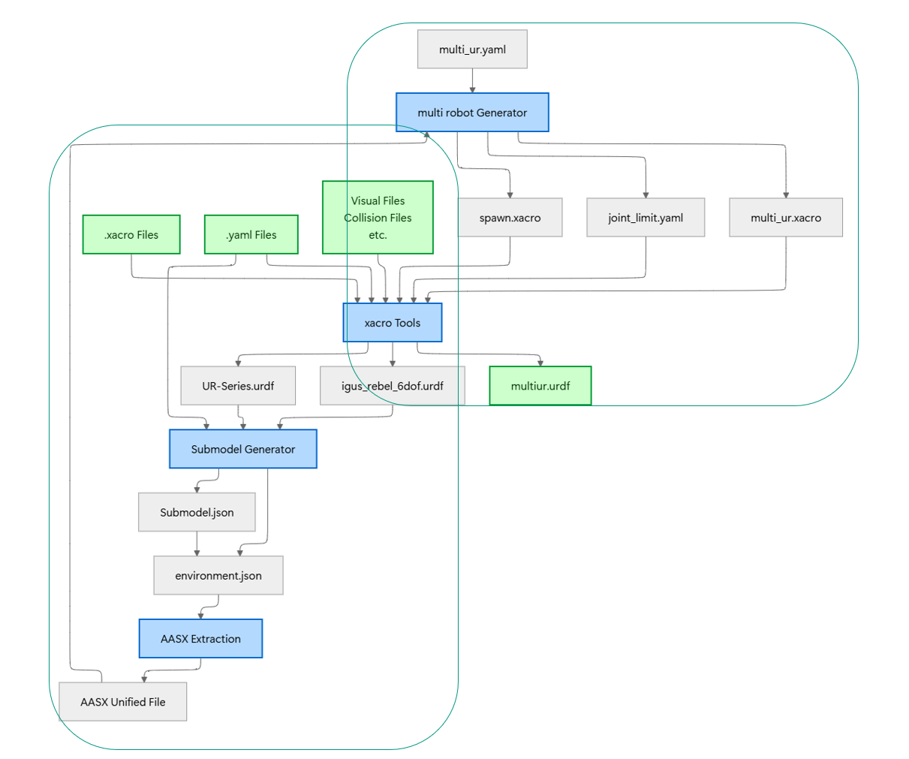
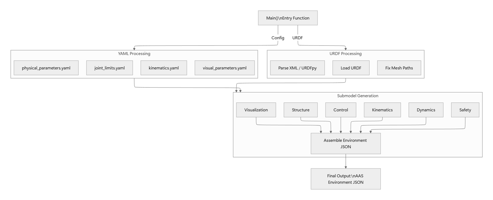
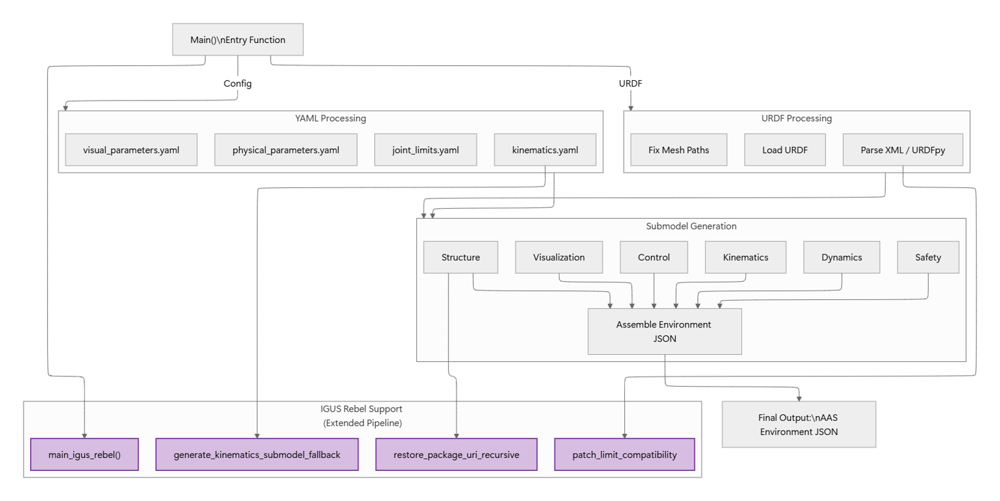
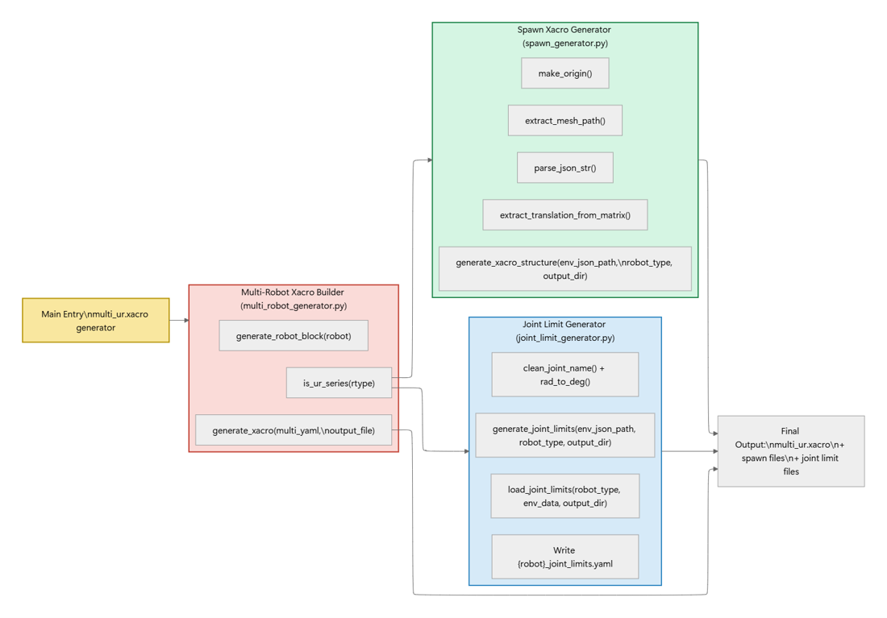
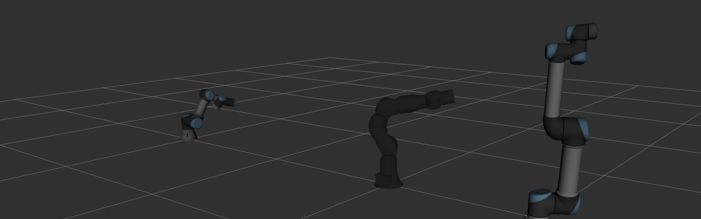

Bachelorarbeit: Digital-Twin-Infrastruktur für die industrielle Produktion
Überblick
Meine Bachelorarbeit am Institut für Regelungs- und Steuerungssysteme (IRS, Professur für Vernetzte Sichere Automatisierungstechnik, Betreuer M.Sc. Witucki) trägt den Titel „Design and Implementation of an AAS Submodel for Industrial Robotic Systems“. Im Mittelpunkt steht eine Digital-Twin-Infrastruktur für die industrielle Produktion: Asset Administration Shells (AAS) als standardisierte, semantische Repräsentation von Industrierobotern — automatisch generiert aus bestehenden Robotik-Beschreibungen (URDF/XACRO/YAML) und direkt weiterverwendbar für die ROS-2-Simulation.
Ziel & Konzept
Die Einrichtung eines einzelnen Industrieroboters erfordert umfangreiche Vorbereitungen. Ziel der Arbeit ist es, diese Hürde zu beseitigen: Es entsteht ein Konzept nach Industrie-4.0-Standard, bei dem vorhandene Roboter mithilfe von AAS zerlegt („decomposed“) und ihre Digital Twins in der Cloud gespeichert werden. Über eine Konfigurationsdatei lassen sich so beliebig viele Roboter mit einem Klick in Betrieb nehmen — die Massenbereitstellung (Batch Deployment) mehrerer Roboter wird vollständig automatisiert.
Phase 1 — Type-Aufbau: Aus der URDF-Beschreibung werden die semantischen AAS-Abschnitte extrahiert; so entsteht der AAS-Type des Roboters.
Phase 2 — Instance-Generierung: Aus dem in der AAS gespeicherten Type werden die konkreten Instanzen (Instances) erzeugt.

Submodel Generator (Phase 1)
Dieser Prozess läuft nicht manuell ab: Für die UR-Serie habe ich ein automatisiertes Zerlegungswerkzeug entwickelt — den Submodel Generator (generate_aas_submodels_ur.py). Er extrahiert die AAS-Semantik direkt aus der URDF-Beschreibung und erzeugt daraus die Teilmodelle (Type).

Erweiterung (Phase 1): igus ReBeL
In der industriellen Produktion kommen oft spezialisierte Roboter zum Einsatz, bei denen eine manuelle Zerlegung nötig sein kann. Um die Kompatibilität zu zeigen, habe ich am Beispiel des igus ReBeL eine erweiterte Pipeline aufgebaut — im Bild violett hervorgehoben.

Multi-Robot Generator (Phase 2)
Auch Phase 2 ist eine vollautomatische Pipeline, zusammengesetzt aus drei automatisierten Programmen: Sie liest eine Konfigurationsdatei mit Informationen zu Typ, Position und Gelenk-Grenzwinkeln der Roboter, baut daraus automatisch das Gerüst auf und importiert die Informationen aus der AAS.

Validierung
Abschließend wurde die gesamte Kette Ende-zu-Ende auf heterogenen Robotersystemen validiert: Universal Robots (UR3/UR5) und der kollaborative Leichtbauroboter igus ReBeL — URDF → AAS → Simulation.

Quellcode
Der vollständige Quellcode der Toolchain (Submodel- & Multi-Robot-Generator) liegt auf GitHub.